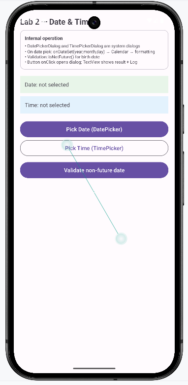

Lab 2 — Date & Time Pickers
DatePickerDialog y TimePickerDialog → Calendar → Formateo → Validación isNotFuture.
📄 Vista XML: res/layout/activity_date_time.xml
☕ Clase: DateTimeActivity.java
🎯 Qué capturar: Pantalla inicial en emulador con los TextViews mostrando "Fecha: no seleccionada" y "Hora: no seleccionada".
💾 Guardar en: assets/images/lab-datetime-preview.png
lab-datetime-preview.png

📄 Vista XML: activity_date_time.xml
☕ Clase: DateTimeActivity.java
🎯 Qué capturar: Pulsar "Seleccionar fecha" para que el DatePickerDialog del sistema se despliegue en primer plano.
💾 Guardar en: assets/images/lab-datetime-dialog.png
lab-datetime-dialog.png

Flujo técnico interno
Calendar c = Calendar.getInstance();
new DatePickerDialog(this, (view,year,month,day)->{
selectedDate.set(year,month,day); // month 0-based
dateChosen = true;
String s = String.format(Locale.getDefault(),"%02d/%02d/%04d",day,month+1,year);
tvDate.setText(getString(R.string.acdati_date_prefix, s));
Toast.makeText(this, getString(R.string.acdati_date_prefix,s), SHORT).show();
Log.i(TAG, "Fecha elegida: "+s);
}, c.get(Calendar.YEAR), c.get(Calendar.MONTH), c.get(Calendar.DAY_OF_MONTH)).show();TimePickerDialog análogo: onTimeSet(hour,minute) → String.format("%02d:%02d") → acdate_time_prefix +
is24HourView=true.
Validación no futura
if(!dateChosen){ Toast(acdati_msg_pick_date_first); return; }
boolean notFuture = ValidationUtils.isNotFuture(selectedDate.getTimeInMillis());
if(notFuture) Toast(acdati_msg_date_ok);
else { tvDate.setError(common_err_date_future); Toast(common_err_date_future); }isNotFuture(millis) = millis <= System.currentTimeMillis(). Útil para fecha nacimiento.
Estado
Dos booleans dateChosen/timeChosen + un Calendar selectedDate con hora 00:00. No hay EditText; TextViews
acdati_date_empty/time_empty muestran placeholder hasta elegir.
Responsive y UI
Layout
ScrollView > LinearLayout + Card intro acdati_info_desc + 2 TextView con backgrounds #E8F5E9/#E3F2FD + 3
Buttons (filled/outlined/filled).
Accesibilidad
Dialogs son del sistema (preservan a11y). TextViews no son editables, no necesitan inputType.